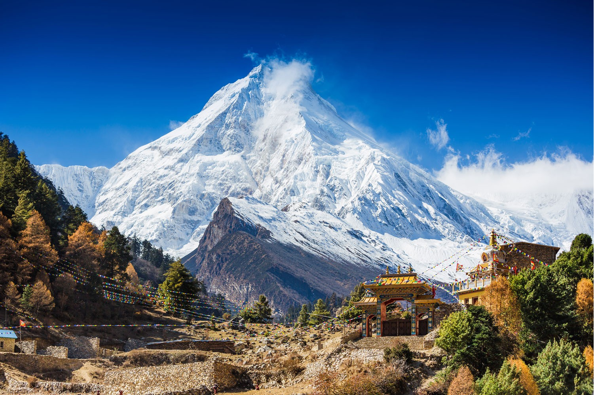
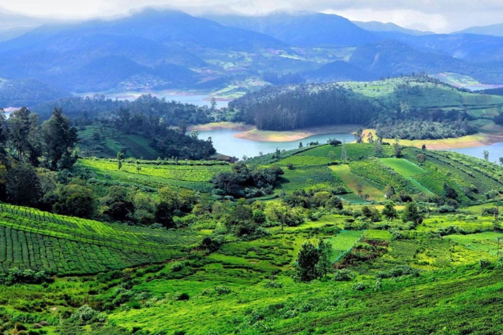
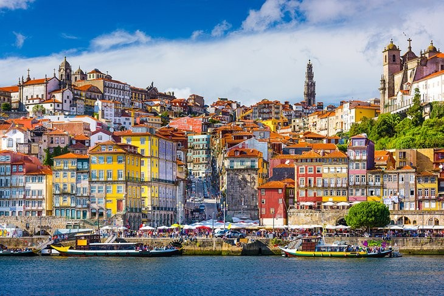
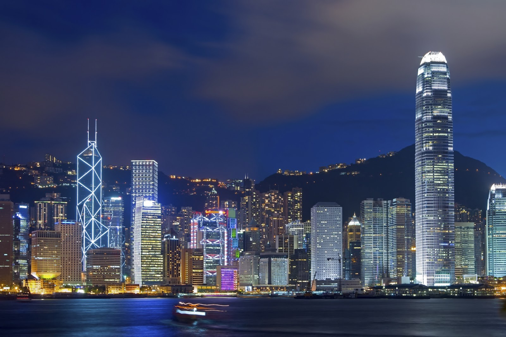
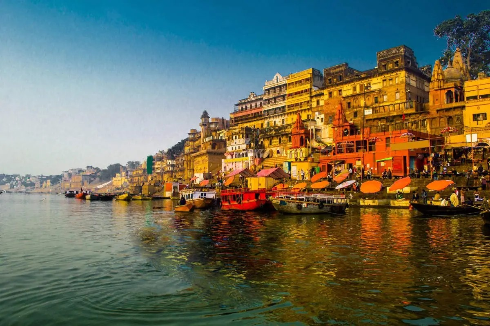
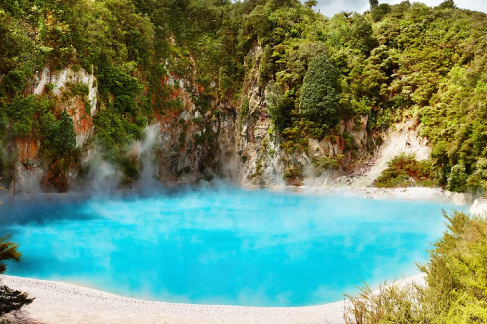
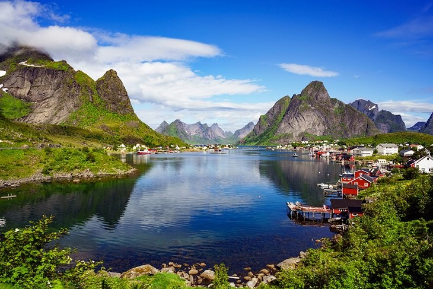

Nepal's culture is a rich tapestry of traditions, festivals, art, and religion deeply rooted in its diverse ethnic communities. It is influenced by Hinduism and Buddhism, which are the two major religions in the country. Nepal is famous for its vibrant festivals such as Dashain, Tihar, and Holi, as well as its intricate art forms like Thangka painting and wood carving. The culture emphasizes strong family ties, respect for elders, and a harmonious relationship with nature. The unique blend of ancient traditions and modern influences gives Nepal a distinct cultural identity.

Japan's culture is a harmonious blend of ancient traditions and modern innovation. It is deeply rooted in practices such as tea ceremonies, calligraphy, and traditional arts like Ikebana (flower arranging) and Noh theater. Shintoism and Buddhism play significant roles in Japan's spiritual life, influencing festivals like Matsuri and Obon. The culture also values respect, etiquette, and harmony, reflected in customs such as bowing and gift-giving. Japan is known for its refined cuisine, including sushi and tea, as well as iconic cultural symbols like geishas, samurai, and cherry blossoms.

Ooty, also known as Udhagamandalam, is a charming hill station in Tamil Nadu, India, known for its vibrant culture. The local culture is a blend of Tamil traditions and colonial influences, evident in its architecture, cuisine, and festivals. The Toda tribe, indigenous to the Nilgiri Hills, plays a significant role in the cultural fabric of Ooty with their distinctive dress, rituals, and dairy-based lifestyle. Visitors can experience traditional Tamil festivals like Pongal, as well as Christian festivals introduced during British colonial rule, making Ooty a unique cultural mosaic.

Portugal's culture is a blend of rich traditions, influenced by its history of exploration and maritime discoveries. Known for Fado music, vibrant festivals like Carnival and São João, and delicious cuisine featuring dishes like bacalhau (salted cod) and pastel de nata (custard tart), Portuguese culture also emphasizes family, hospitality, and a strong connection to the sea. The country's architecture showcases stunning Manueline and Moorish influences, while traditions such as folk dancing, bullfighting, and the art of azulejos (ceramic tiles) continue to thrive.

Hong Kong's culture is a unique fusion of Eastern and Western influences, shaped by its Chinese heritage and colonial past under British rule. It blends traditional Chinese customs, such as festivals like Lunar New Year and Mid-Autumn Festival, with modern Western practices. Cantonese opera, martial arts, and tea culture thrive alongside contemporary art, cinema, and international cuisine. Hong Kong is known for its bustling urban lifestyle, respect for family values, and a deep-rooted belief in feng shui, creating a dynamic and multicultural identity.

Varanasi, one of the world's oldest cities, is a major cultural and religious hub in India. Known as the spiritual capital of the country, it is famous for its sacred ghats along the Ganges River, where rituals, prayers, and cremations take place daily. Varanasi is closely associated with Hinduism, but also embraces Buddhism and Jainism. Its culture is rich with classical music, dance, and ancient traditions, reflected in festivals like Diwali and Dev Deepawali. The city is renowned for its vibrant temples, intricate silk weaving, and profound spiritual atmosphere that draws pilgrims and seekers from around the world.

New Zealand's culture is a unique blend of Māori and European influences, reflecting its history and diverse population. The indigenous Māori people have a rich heritage, characterized by traditional practices, language, and art forms such as carving, weaving, and kapa haka (dance). Their concept of whānau (family) and manaakitanga (hospitality) play significant roles in social interactions.

Norway's culture is characterized by a blend of ancient traditions and modern influences. Rooted in Viking heritage, it showcases a strong connection to nature, reflected in its art, music, and folklore. The country celebrates a variety of festivals, such as Constitution Day on May 17th, which highlights national pride. Traditional Norwegian cuisine features dishes like rakfisk (fermented fish) and lutefisk (dried fish), showcasing its maritime history. The nation is also known for its contributions to literature, with famous figures like Henrik Ibsen and Knut Hamsun. Norway’s rich cultural landscape is further enhanced by its stunning landscapes, from fjords to mountains, inspiring creativity and a deep appreciation for the natural world.